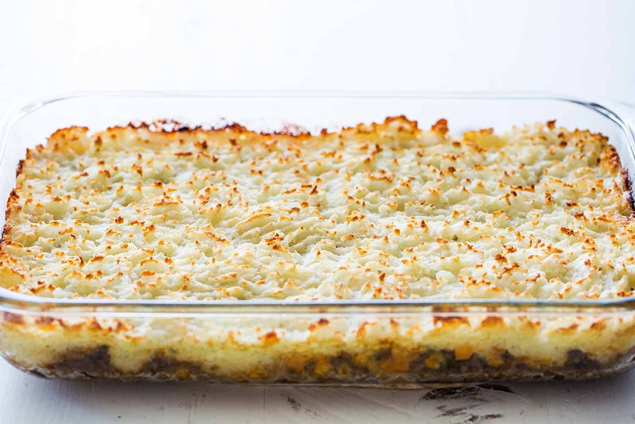

Shepherd's Pie

Great on a day when you don't feel like making a big meal.
Ingredients
- 1 1/2 to 2 pounds potatoes (about 3 large potatoes), peeled and quartered
- 8 Tablespoons (1 stick) butter
- 1 medium onion, chopped (about 1 1/2 cups)
- 1-2 cups vegetables—diced carrots, corn, peas
- 1 1/2 lbs ground round beef
- 1/2 cup beef broth
- 1 teaspoon Worcestershire sauce
- Salt, pepper, other seasonings of choice
Directions
- Boil the potatoes: Place the peeled and quartered potatoes in medium sized pot. Cover with at least an inch of cold water. Add a teaspoon of salt. Bring to a boil, reduce to a simmer, and cook until tender (about 20 minutes).
- Sauté vegetables: While the potatoes are cooking, melt 4 tablespoons of the butter in a large sauté pan on medium heat. Add the chopped onions and cook until tender, about 6 to 10 minutes.
If you are including vegetables, add them according to their cooking time. Carrots should be cooked with the onions, because they take as long to cook as the onions do.
If you are including peas or corn, add them toward the end of the cooking of the onions, or after the meat starts to cook, as they take very little cooking time.
- Add the ground beef, then Worcestershire sauce and broth: Add ground beef to the pan with the onions and vegetables. Cook until no longer pink. Season with salt and pepper.
Add the Worcestershire sauce and beef broth. Bring the broth to a simmer and reduce heat to low. Cook uncovered for 10 minutes, adding more beef broth if necessary to keep the meat from drying out.
- Mash the cooked potatoes: When the potatoes are done cooking (a fork can easily pierce), remove them from the pot and place them in a bowl with the remaining 4 Tbsp of butter. Mash with a fork or potato masher, and season with salt and pepper to taste.
- Layer the meat mixture and mashed potatoes in a casserole dish: Preheat oven to 400°F. Spread the beef, onions, and vegetables (if using) in an even layer in a large baking dish (8x13 casserole).
Spread the mashed potatoes over the top of the ground beef. Rough up the surface of the mashed potatoes with a fork so there are peaks that will get well browned. You can even use a fork to make creative designs in the mashed potatoes.
- Bake in oven: Place in a 400°F oven and cook until browned and bubbling, about 30 minutes. If necessary, broil for the last few minutes to help the surface of the mashed potatoes brown.
YUMMO!!!! ENJOY!!!